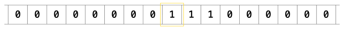

Exemple du doublement de bâtons
Faire de l'arithmétique avec une machine de Turing. Comme on ne peut qu'écrire des 0 ou des 1, la façon la plus simple d'écrire les nombres est d'utiliser un système unaire : chaque entier $n$ est représenté par $n$ 1 successifs sur la machine.
Problème
Nous voulons créer une machine de Turing qui prend en entrée une suite finie de $k$ 1 ($k$ bâtons) et rend comme sortie une suite de $2k$ 1 ($2k$ bâtons).
Cette machine fait l'opération multiplier par 2 unaire.
Idée
Chaque bâton en entrée doit être doublé, mais :
- comme une machine de Turing n'a pas de variable on ne peut pas utiliser de compteur de boucle
- le nombre d'états est constant : on ne peut pas les utiliser pour faire un compteur de boucle ($n$ états ne permettraient que de traiter les nombres de taille au plus $n$)
Il faut pouvoir trouver une boucle principale d'action et avoir un moyen simple de vérifier les fins de boucle et de revenir en début de boucle si nécessaire.
L'idée est de fabriquer la sortie à droite de l'entrée en supprimant itérativement un bâton à l'entrée et en en ajoutant 2 à la sortie. Lorsque l'on aura supprimé tous les bâtons de l'entrée, il ne restera que la sortie et la machine s'arrêtera :
000①10000000000
0000①0000000000
00001⓪000000000
000010⓪00000000
0000101⓪0000000
00001011⓪000000
0000101①0000000
000010①10000000
00001⓪110000000
0000①0110000000
000⓪10110000000
0000①0110000000
00000⓪110000000
000000①10000000
0000001①0000000
00000011⓪000000
000000111⓪00000
0000001111⓪0000
000000111①00000
00000011①100000
0000001①1100000
000000①11100000
00000⓪111100000
0000⓪0111100000
00000⓪111100000
000000①11100000
Ou de façon animée avec 3 bâtons :

Création de la machine
On va exécuter notre machine et ajouter petit à petit des états qui vont permettre de réaliser notre schéma ci-dessus.
On va ici ne pas faire dans la dentelle et ajouter des états lorsque l'on en a besoin. Il existe sûrement une version plus optimisée de cette machine mais qui sera plus compliquée à trouver.
Départ
On part de (START, 1) à droite tant que l'on rencontre des 1 :
000①10000000000 START
0000①0000000000 UN
00001⓪000000000 UN
...
On peut faire ça comme ça :
| état | case | nouvel état | écriture | déplacement |
|---|---|---|---|---|
| START | 1 | UN | 0 | droite |
| UN | 1 | UN | 1 | droite |
Séparation entre entrée et sortie
On arrive au 0 qui doit séparer l'entrée de la sortie. On se décale vers la droite pour se placer en mode écriture.
...
00001⓪000000000 UN
000010⓪00000000 DEUX
...
Ceci peut se faire en ajoutant autant d'états que nécessaire :
| état | case | nouvel état | écriture | déplacement |
|---|---|---|---|---|
| UN | 0 | DEUX | 0 | droite |
Écriture de la sortie
On arrive au 0 qui doit être remplacé par deux 1 à la suite.
...
00001⓪000000000 UN
000010⓪00000000 DEUX
0000101⓪0000000 TROIS
00001011⓪000000 QUATRE
...
On peut faire ça directement avec 1 nouvel état :
| état | case | nouvel état | écriture | déplacement |
|---|---|---|---|---|
| DEUX | 0 | TROIS | 1 | droite |
| TROIS | 0 | QUATRE | 1 | droite |
On remonte la sortie
Il faut maintenant remonter la sortie :
...
00001011⓪000000 QUATRE
0000101①0000000 CINQ
000010①10000000 CINQ
00001⓪110000000 CINQ
...
| état | case | nouvel état | écriture | déplacement |
|---|---|---|---|---|
| QUATRE | 0 | CINQ | 0 | gauche |
| CINQ | 1 | CINQ | 1 | gauche |
On remonte l'entrée
...
00001⓪110000000 CINQ
0000①0110000000 SIX
000⓪10110000000 SIX
...
| état | case | nouvel état | écriture | déplacement |
|---|---|---|---|---|
| CINQ | 0 | SIX | 0 | gauche |
| SIX | 1 | SIX | 1 | gauche |
On recommence à START
On est arrivé juste à gauche de l'entrée, il suffit de se décaler à droite pour tout recommencer.
...
000⓪10110000000 SIX
0000①0110000000 START
...
| état | case | nouvel état | écriture | déplacement |
|---|---|---|---|---|
| SIX | 0 | START | 0 | droite |
La machine va alors recommencer son cycle jusqu'à tomber sur un cas non prévu :
...
0000①0110000000 START
00000⓪110000000 UN
000000①10000000 DEUX
...
On a écrit des choses en sortie. Il faut donc se décaler jusqu'à obtenir un 0 :
| état | case | nouvel état | écriture | déplacement |
|---|---|---|---|---|
| DEUX | 1 | DEUX | 1 | droite |
Ce qui permet de continuer comme si de rien n'était :
000000①10000000 DEUX
0000001①0000000 DEUX
00000011⓪000000 DEUX
000000111⓪00000 TROIS
0000001111⓪0000 QUATRE
000000111①00000 CINQ
00000011①100000 CINQ
0000001①1100000 CINQ
000000①11100000 CINQ
00000⓪111100000 CINQ
0000⓪0111100000 SIX
...
On STOP si on a fini
Il ne nous reste plus qu'à gérer le stop :
...
0000⓪0111100000 SIX
00000⓪111100000 START
000000①11100000 STOP
| état | case | nouvel état | écriture | déplacement |
|---|---|---|---|---|
| START | 0 | STOP | 0 | droite |
Machine finale
| état | case | nouvel état | écriture | déplacement |
|---|---|---|---|---|
| START | 0 | STOP | 0 | droite |
| START | 1 | UN | 0 | droite |
| UN | 0 | DEUX | 0 | droite |
| UN | 1 | UN | 1 | droite |
| DEUX | 0 | TROIS | 1 | droite |
| DEUX | 1 | DEUX | 1 | droite |
| TROIS | 0 | QUATRE | 1 | droite |
| QUATRE | 0 | CINQ | 0 | gauche |
| CINQ | 0 | SIX | 0 | gauche |
| CINQ | 1 | CINQ | 1 | gauche |
| SIX | 0 | START | 0 | droite |
| SIX | 1 | SIX | 1 | gauche |
ce qui donne comme exécution complète en 25 opérations :
0 : ①1000000 START
1 : 0①000000 UN
2 : 01⓪00000 UN
3 : 010⓪0000 DEUX
4 : 0101⓪000 TROIS
5 : 01011⓪00 QUATRE
6 : 0101①000 CINQ
7 : 010①1000 CINQ
8 : 01⓪11000 CINQ
9 : 0①011000 SIX
10 : ⓪1011000 SIX
11 : 0①011000 START
12 : 00⓪11000 UN
13 : 000①1000 DEUX
14 : 0001①000 DEUX
15 : 00011⓪00 DEUX
16 : 000111⓪0 TROIS
17 : 0001111⓪ QUATRE
18 : 000111①0 CINQ
19 : 00011①10 CINQ
20 : 0001①110 CINQ
21 : 000①1110 CINQ
22 : 00⓪11110 CINQ
23 : 0⓪011110 SIX
24 : 00⓪11110 START
25 : 000①1110 STOP